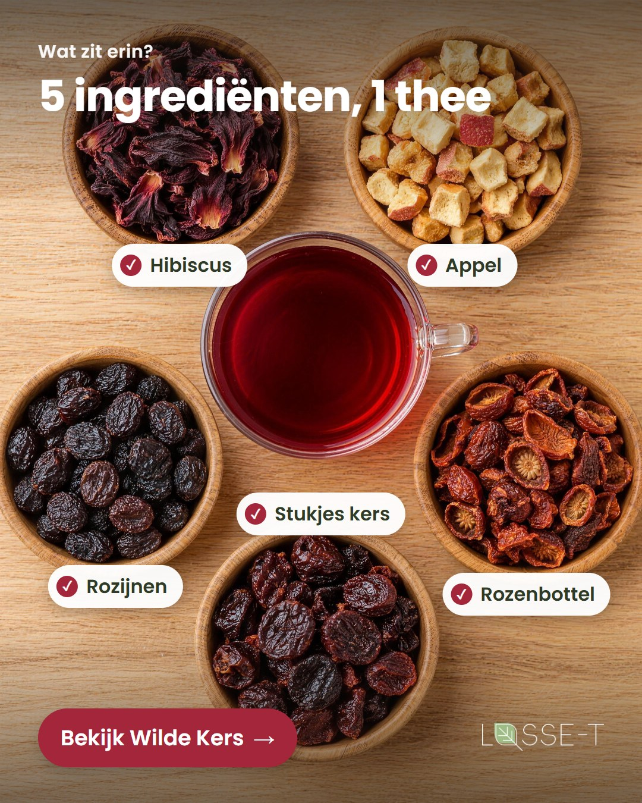
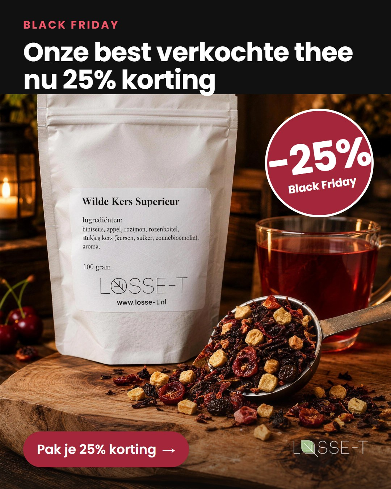
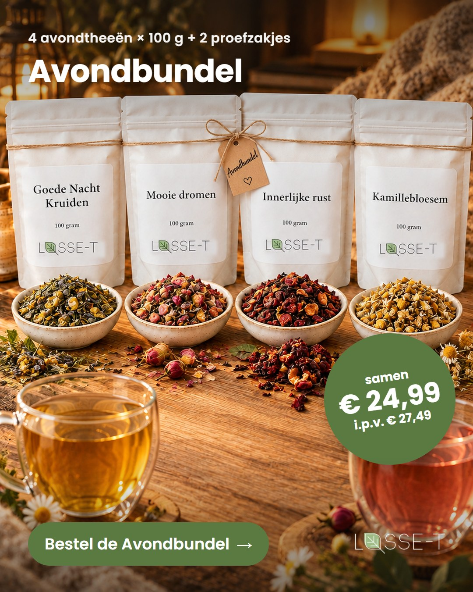
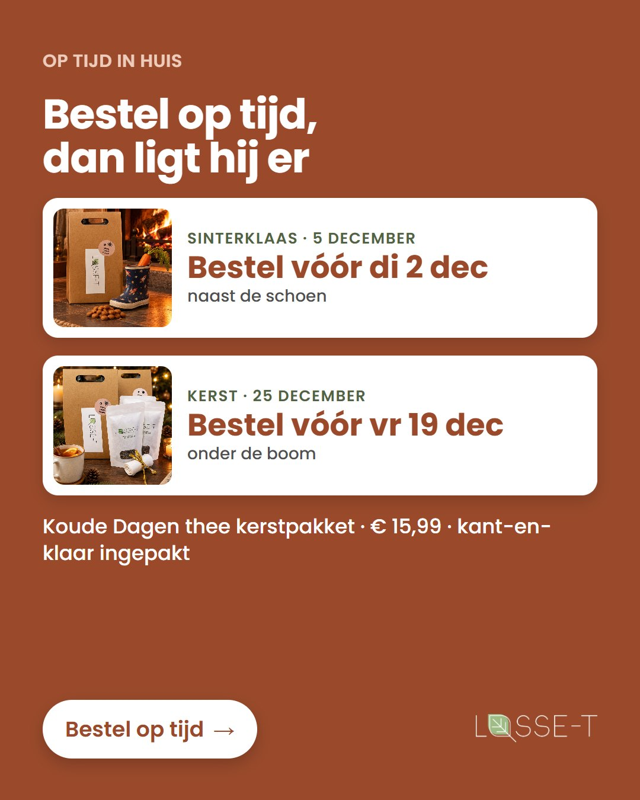
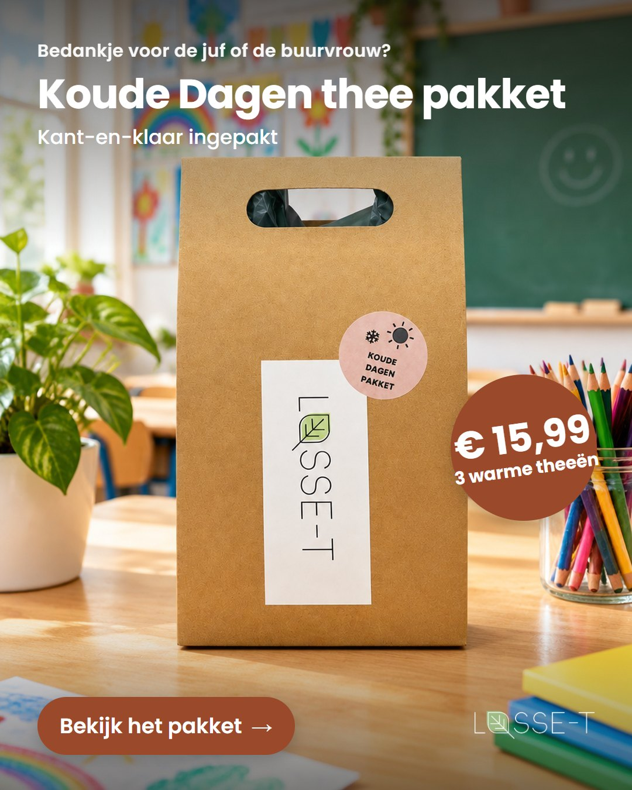

Fase 2
5. Meta Ads
Mensen bereiken die nog niet zoeken
Google vangt mensen die al zoeken; Meta maakt nieuwe mensen nieuwsgierig. Per doelgroep een eigen advertentieset, met video's die de scroll stoppen. Per thema een selectie; via de knoppen zie je alle 93 advertenties, ingedeeld per doelgroep.
Wilde Kers Superieur · 27 advertenties
S6 Smaakontdekker, S3 Supermarkt-Upgrader, S2 Zoete trek, retargeting en Black Friday.
S2 · scroll-stopperKers in je thee.Kers valt in slow motion in de thee.

S3 · Supermarkt-UpgraderSupermarktzakje vs. Wilde KersHet verschil in één beeld.

S6 · Smaakontdekker5 ingrediënten, 1 theeEcht fruit dat je ziet.

Black Friday25% kortingEén per doelgroep.
Avondthee · 28 advertenties
R2 Slaapzoeker, R1 Avond-Ontspanner, R3 Cafeïnevrij, R7 Ontstresser en retargeting.
R2 · scroll-stopperHet licht gaat uitLamp uit, laatste kop van de dag.

R2 · SlaapzoekerOm 23:30 nog op je telefoon?Probleem als hook, ritueel als antwoord.

R3 · CafeïnevrijVan nature cafeïnevrij's Avonds thee zonder cafeïne.

RetargetingAvondbundel € 24,99Vier avondtheeën + 2 proefzakjes.
Cadeau en kerst · 38 advertenties
C3 Kerstshopper, C1 Bedankjesgever, C2 Verwenner en retargeting, voor het kerstpakket en het cadeaupakket.
C3 · videoUitpakken onder de boomKerstpakket in beeld.

C3 · KerstshopperOp tijd in huisUiterste besteldata Sint en kerst.

C1 · BedankjesgeverEen bedankje voor de jufOntvanger concreet maken.

C1 · meer stuks3 voor € 42,99Hogere orderwaarde.